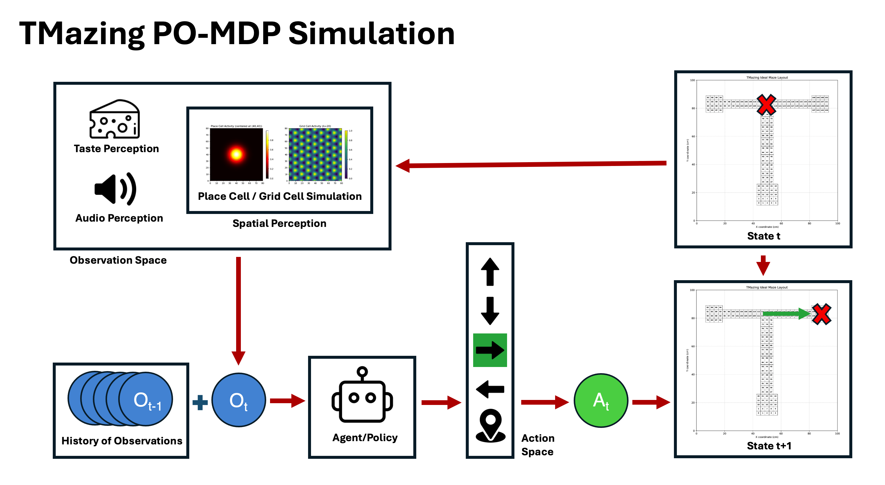
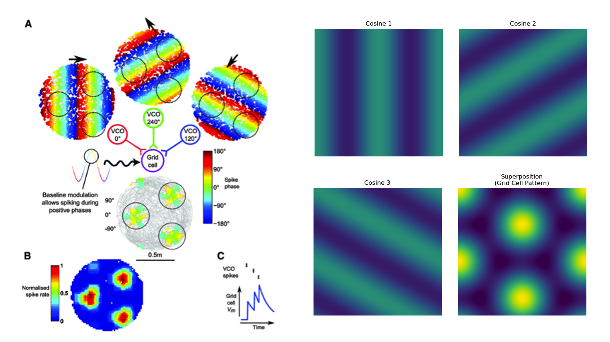
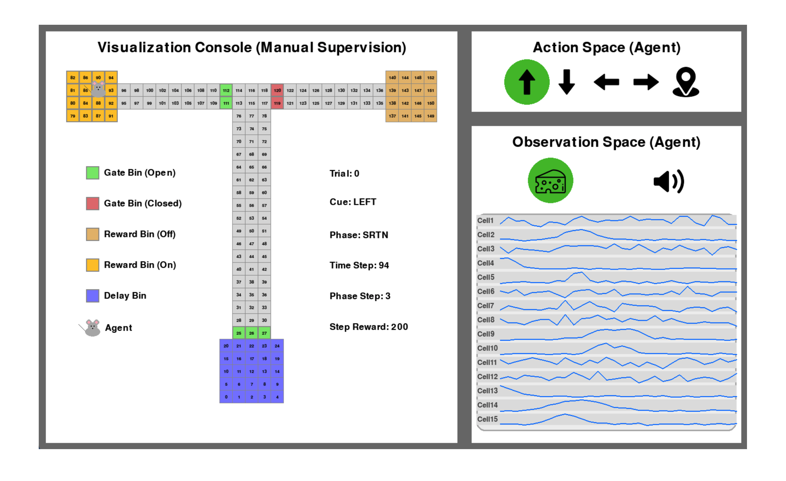
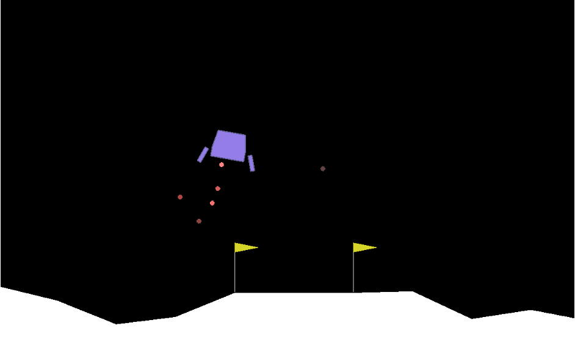
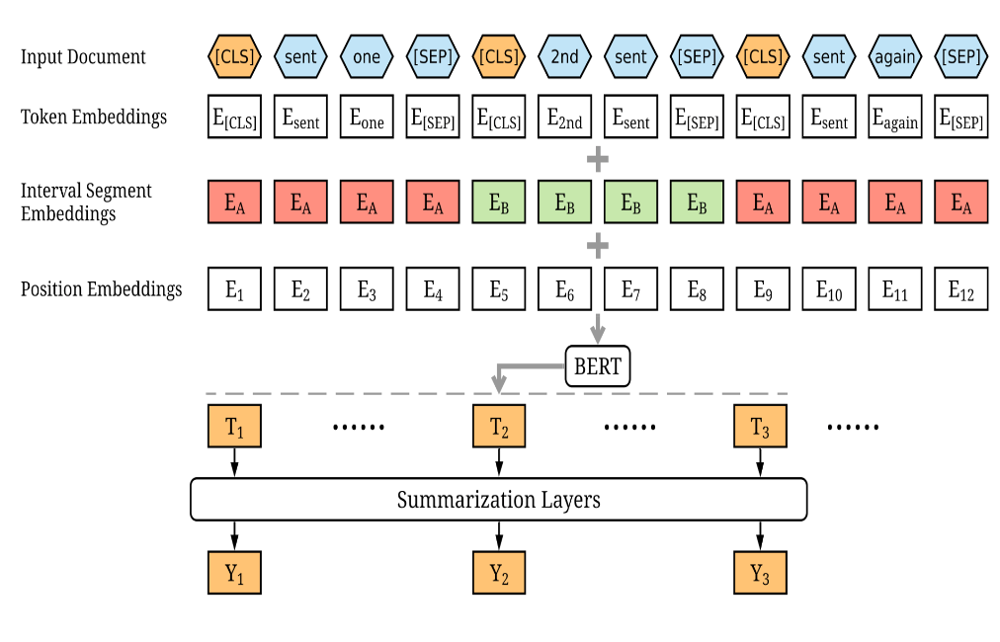
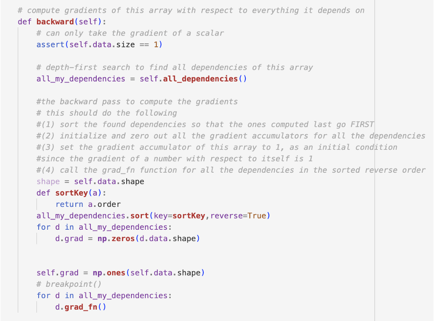
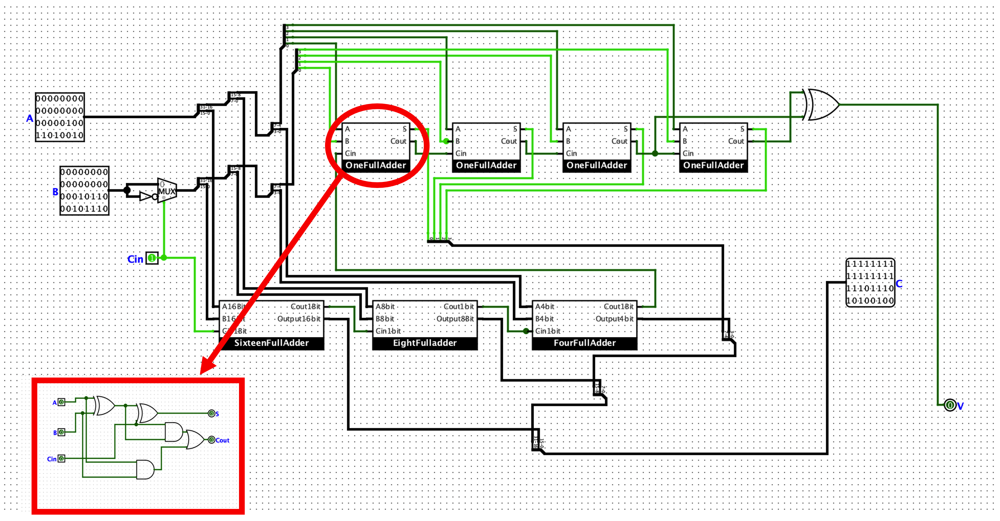

TMazing & DORA Reinforcement Learning Project (Harvard, RA)
Themes: Computational Neuroscience, Reinforcement Learning, Delayed Non-match to Sample, Partially Observable Markov Decision Process, Deep Recurrent Q-Network, OpenAI Gymnasium
Navigation-based DNMTS task (delayed nonmatch-to-sample) is the classic behavioral paradigm to study working memory, decision-making, and cognitive flexibility in rodent model systems. One approach to understanding how the brain solves such tasks is to employ reinforcement learning (RL) agents as mathematical proxies for neural computations, under the premise that any agent—biological or artificial—must share core computational characteristics to successfully perform the same cognitive task. To this end, I implemented a custom simulation environment to model our T-maze-based DNMTS task and am currently training an RL agent within it. This custom environment, which I named TMazing (the “amazing T-mazing”), extends the OpenAI Gymnasium framework, a standard API for RL research. To be consistent with the DNMTS paradigm, I formalized the task as a POMDP (partially-observable Markov decision process), reflecting the fact that the agent has limited access to the full environment state and must rely on past sensory experiences to perform correctly. The observation space encompasses three primary information channels: spatial position, auditory cues, and gustatory feedback. Auditory signals indicate gate opening during phase transitions, while gustatory information provides immediate reward detection. Spatial representation, which was initially implemented as one-hot positional encoding, was subsequently refined to simulate place-cell (gaussian bump model) or grid-cell (cosine interference model) population activation. This refinement followed the realization that one-hot vector encoding represents an extreme case of place-cell activity characterized by extremely sharp, non-overlapping place fields. The agent obtains reward from successfully navigating to the target reward location, explorative behavior, thigmotaxis, and receives a penalty for timing-out and energy expenditure. The environment also incorporates robust error-handling protocols for any atypical agent behaviors. In a “time-out” scenario, which is when the agent has prolonged episodes of actions without achieving the phase transition criterion (e.g., not returning to the delay box after obtaining sample reward), the agent will be forced into ITI (inter-trial interval) with a time-out penalty plus opportunity cost of missed food reward. In a “wrong-choice” scenario, which is when the agent chooses the wrong arm at task phase, the opposing gate locks and the agent will face the opportunity cost of task food reward. The environment can be executed without rendering for training, but it has implementation for graphics with the Pygame lightweight game engine. This allows visualizing the behavior of trained agents and human interaction with the environment. To solve this simulated DNMTS task, I am implementing a custom recurrent architecture which I termed “DORA” (delayed option reinforcement agent, “DORA the explorer”). DORA is a LSTM-based (long short-term memory) DRQN (deep recurrent Q-network) algorithm, designed to capture the task’s temporal dependencies for effective decision-making. TMazing’s POMDP formulation violates standard Markov assumptions, precluding the application of traditional RL algorithms that rely on Bellman equation frameworks designed for fully observable environments. The DRQN approach extends DQN (Deep Q-Network) methodologies to the partially observable domain by incorporating recurrent neural network architectures capable of maintaining internal state representations across temporal sequences. The LSTM implementation provides dual information processing pathways—long-term cell state and short-term hidden state—that enable systematic analysis of how the agent maintains task-relevant information throughout delay periods. Agent training is currently still in progress, and iterative modifications are being made to the training loop design and agent architectural components. In the end, we hope this work gives us the opportunity to see what representation the agent maintains to track cue information. This enables us to form testable hypotheses about the neural mechanisms underlying working memory in vivo, and to directly compare representations in artificial agents with those observed in our animal experiments.
MDP (Markov Decision Process) and PO-MDP (Partially Observable Markov Decision Process) are mathematical frameworks for modeling decision-making in RL.
TMazing uses a PO-MDP framework to model the fact that agents in DNMTS rely on past sensory experiences to inform decision-making.
We use cosine interference model to simulate grid-cell activation. Above is a simple noise-free example.
The TMazing console provides a graphical interface for interacting with the TMazing environment. Notice the simlated traces of population activity at the lower-right panel.
Comp Neuro & Machine Learning Projects (Cornell, Undergrad)
Themes: Computational Neuroscience, Reinforcement Learning, Natural Language Processing, Machine Learning Theory, Computer Architecture
During undergraduate studies at Cornell, I pursued diverse programming projects spanning computational neuroscience, reinforcement learning, natural language processing, machine learning theory, and computer architecture. These experiences helped develop my ability to bridge theoretical concepts with practical implementations, and the skills I've acquired directly contribute to my current research. In the computational neuroscience domain, my simulation projects involved using standard SNN (spiking neural network) paradigms—such as LIF (leaky integrate-and-fire) and MCP (McCulloch–Pitts) neurons—to construct canonical network motifs including Hopfield networks and oscillatory circuits. The Hopfield network, for example, is a recurrent artificial neural network that models auto-completion and content-addressable memory functionality of the hippocampal circuit. It demonstrates robust pattern recovery, where corrupted input patterns are recovered to their corresponding stored representations. The first figure on the right demonstrates the simulated Hopfield network recovering patterns of digit “0” and “1” from noisy inputs. In the reinforcement learning domain, I developed agents to solve relatively simple MDP (Markov Decision Process) problems such as the Lunar Lander environment. The OpenAI Gym Lunar Lander environment represents a classic continuous control benchmark task that requires agents to execute controlled landings through thrust and rotational control. My implementation used a simple feed-forward architecture with the DQN (Deep Q-Network) training scheme, which is a Q-learning algorithm that relies on a neural network to approximate optimal action-value functions (Q functions). The second figure on the right is a rendered frame of the agent attempting landing in the environment. This experience has built the foundation for my current reinforcement learning project, where I implement a custom environment to simulate our animal experiment and train agents within it. In the natural language processing domain, I developed a text summarization model using a pre-trained transformer (BERT-light). The model employs an extractive summarization approach where BERT first processes input sentences and generates sentence-level representations through its "sentence essence" CLS token. A binary classification head then analyzes these CLS token outputs to determine whether each sentence should be included in the final summary. We trained the model on a news dataset where the input documents were news articles, and the ground truth summaries were derived from the handy accompanying bullet points. Our model performed well on ROUGE-N evaluation metrics, which measures the overlap of n-grams (a sequence of n consecutive tokens) between the prediction and the reference. In ML theory, I implemented a basic backpropagation engine that performs automatic differentiation on computational graphs. Backpropagation is the backbone (pun intended) of deep learning. It automates the process of calculating gradients of the loss function with respect to model parameters using the chain rule. My implementation follows PyTorch's reverse-mode design, where the algorithm dynamically constructs a computational graph during the forward pass and subsequently traverses the graph in reverse to compute gradients. This project provided me with a comprehensive understanding of the mathematical foundations underlying machine learning and helped me grow proficient with the PyTorch framework. In the computer architecture domain, I designed a complete CPU circuit based on the 32-bit RISC-V instruction set architecture, an open-source processor specification. The processor was constructed entirely from fundamental logic gate components (NOT, AND, OR, etc.) and simulated using Logisim, an open-source digital circuit design platform. Shown on the right is the circuit design of the RCA (ripple-carry adder) unit, which implements binary mathematical addition/subtraction in the ALU (arithmetic logic unit, a CPU component). The ripple-carry adder is called so because the “carry output” from each stage must "ripple" through to the next stage sequentially (notice the one->two->four->…sixteen progression in the figure). This project provided me with a comprehensive understanding of how high-level computations are translated into fundamental Boolean operations at the hardware level, demystifying the seemingly magical inner workings of computers.
Hopfield network is capable of recovering stored patterns from noisy inputs. Here we demonstrate an example recovering 2D images with our model.
OpenAI Lunar Lander Environment is a classic continuous control benchmark task. Here is a frame of a DQN agent attempting landing (current applying downward thrust).
The general structure of our extractive summarization model. It employs pre-trained BERT transformer to generate sentence-level representations and a binary classification head.
Our backpropagation engine models PyTorch's reverse-mode design. It uses a forward pass to construct a computational graph and then back traverse to compute gradients.
The ripple-carry adder is a key component of the ALU that implements binary addition/subtraction. Notice the one->two->four->…sixteen progression in the figure.